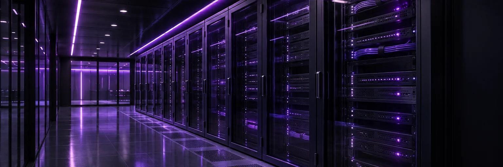

Redes y desempeño
Monitorea disponibilidad por ping y métricas por SNMP, incluido el tráfico de interfaces en equipos compatibles.
MONITOREO DE INFRAESTRUCTURA
LinkWich-Monitor® centraliza el monitoreo de tus redes, servidores y servicios. Detecta fallas, ubica los equipos afectados y consulta lo que ocurrió desde una sola plataforma.
Los Cabos42 de 42 equipos en línea
Meta SLA 99.50 %

LA PLATAFORMA
El equipo de TI puede ver qué está disponible, dónde se concentra un problema y cómo ha cambiado la operación con el tiempo.
CAPACIDADES
Reúne las señales que tu equipo consulta para diagnosticar una falla y darle seguimiento.
Monitorea disponibilidad por ping y métricas por SNMP, incluido el tráfico de interfaces en equipos compatibles.
Explora los enlaces entre equipos a partir de vecinos LLDP y ubica cómo se conectan tus dispositivos.
Revisa CPU, memoria, disco, servicios y métricas de UPS según los datos que expone cada equipo.
Configura alertas para interfaces, servicios y almacenamiento. Consulta el historial de cortes.
Consulta el histórico de disponibilidad y ancho de banda, y genera reportes para revisiones operativas.
Combina el monitoreo local con un portal externo que comprueba si cada instalación sigue reportando.
Reúne los eventos Syslog de tus equipos y consulta sus registros desde un solo lugar.
Programa copias de la configuración de switches y routers compatibles.
Abre sesiones VNC, SSH o Telnet desde LinkWich-Monitor® y gestiona tus equipos en un solo sitio.
COMPATIBILIDAD
Supervisa redes, servidores y UPS desde LinkWich-Monitor®. Validamos las métricas disponibles según el modelo y sus especificaciones técnicas.
ROUTING Y SWITCHING
 Cisco
Cisco Ruijie
RuijieEntre otras marcas de routing y switching.
Huawei GPON. Monitorea OLT Huawei compatibles y consulta el estado de sus ONT.
SERVIDORES
Monitorea recursos y servicios en los servidores donde instalas el agente.
 Windows
Windows Linux
LinuxENERGÍA
Consulta las métricas que expone cada modelo de UPS compatible.
 APC
APCAmpliamos la compatibilidad. Seguimos incorporando marcas y podemos evaluar un fabricante o modelo específico para integrarlo si sus especificaciones técnicas lo permiten.
ALERTAS Y CONTINUIDAD
LinkWich-Monitor® opera en tu infraestructura y se complementa con un portal de continuidad en la nube.
01 / MONITOREO LOCAL · ON-PREMISES
Define qué eventos deben generar una alerta y por qué canal avisar a tu equipo cuando el monitor los detecte.
02 / PORTAL DE CONTINUIDAD · NUBE
El portal verifica si tu instalación sigue reportando. Si deja de hacerlo, puede avisarte por correo. Desde el portal puedes consultar el estado de tus sitios y la vigencia de la licencia.
DEMO INTERACTIVA
Selecciona un enlace para ver sus métricas. Activa un incidente y vuelve a pulsarlo para simular su recuperación.
ENLACE SELECCIONADO
Te1/1/1 ↔ Te1/0/48 · VLAN 10 (Datos), 20 (Voz)
Activa un escenario para ver sus avisos de ejemplo.
| Hora | Aviso | Entrega |
|---|
Consulta los eventos simulados del sitio, incluido el restablecimiento.
| Hora | Origen | Severidad | Evento |
|---|
La muestra ARP ilustra cómo se ve el tráfico cuando cada IP corresponde a una sola MAC.
| Hora | Protocolo | IP anunciada | MAC de origen | Interfaz |
|---|

SECTORES
Para organizaciones que necesitan mantener conectados a sus equipos, usuarios y servicios esenciales.
CÓMO TE AYUDAMOS
Empezamos con los equipos y servicios que más importan para tu operación.
Identificamos equipos, enlaces y servicios críticos, y acordamos qué necesitas monitorear.
Probamos el monitoreo y las alertas con una muestra de tu infraestructura.
Instalamos la plataforma y configuramos los dispositivos, las métricas y los canales acordados.
Acompañamos a tu equipo en la operación y en los ajustes que requiera a medida que cambia tu red.

Revisemos qué equipos, enlaces y servicios necesitas monitorear en tus sitios.